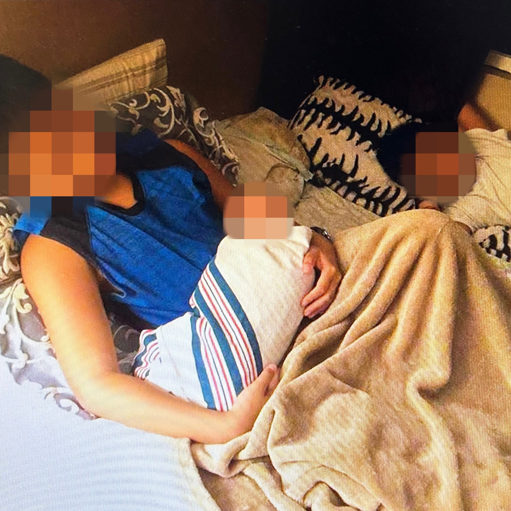

We were just kids, growing up together
We thought it would be us, together forever
We grew up in the projects, played curb ball in the streets
Nothing else mattered, we went week after week
When we were kids, we thought the whole world was ours
Never thought I'd have to give you these flowers
By the time I was 12, my family had enough to move out
I wanted to bring you with me, there was never a doubt
But we still hung out, came over every day
It was as if nothing changed, we were just farther away
But as we got older, we both became busy
And little by little, you started to see less of me
Never forget where you're from, that's what you said
That's also what you wrote in your last text that I read
One day you called me, asked me to come through
But I said I was busy, had too many things to do
One day I came home, after a game that we lose
I see my parents standing ready to give me some news
It happened so fast, it happened earlier that night
When some people came by and decided to take away your life
I don't have many regrets, but there's one that I do
When I said I was too busy to come over to see you
Now every year, I come by to your grave
To give you the time that I wish that I gave
Rest in peace my friend, you are my biggest blessing
There'll always be a piece of me that's missing
Long live Ricardo, until we again meet
When we were just those kids out playing curb ball in the street

Writer
Kosti Blue